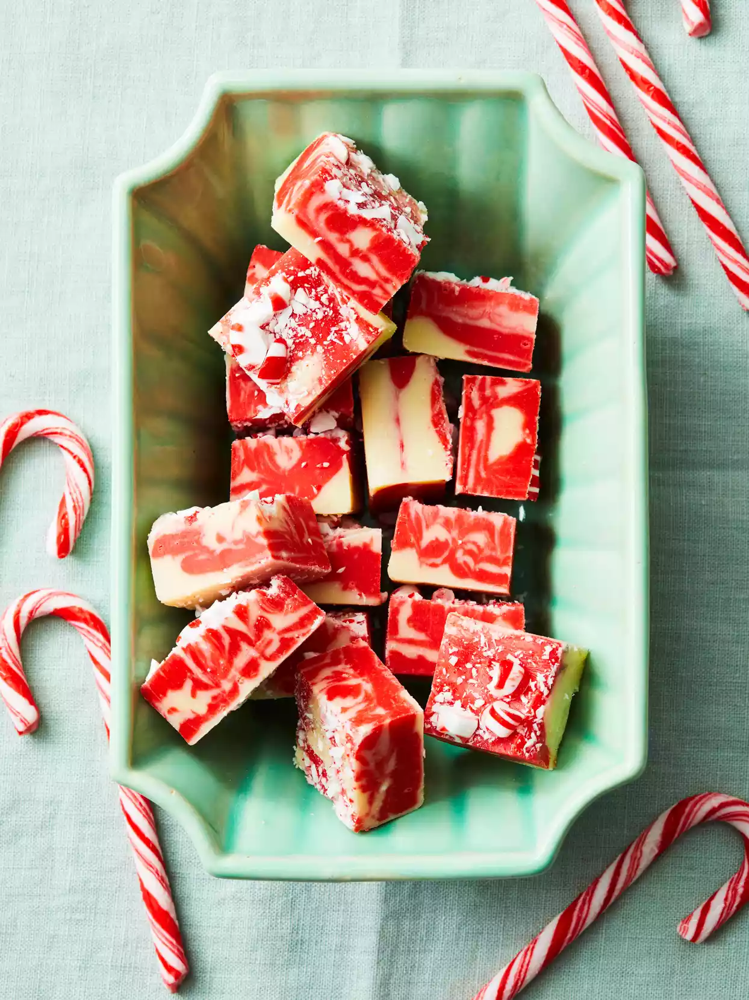

Candy Cane Swirl Fudge

Description
It only takes 15 minutes to prep this festive holiday fudge recipe. Use gel food coloring instead of liquid food coloring for the most vibrant color.
Ingredients
- 2 - 12 oz packages white baking chips (4 cups)
- 1 - 14 oz can (11/4 cups) sweetened condensed milk
- 1/2 tsp peppermint extract
- Red gel food coloring
- Crushed candy canes or peppermint candies (optional)
Directions
- Line an 8-inch square baking pan with foil, extending foil over edges. Butter foil.
- In a heavy medium saucepan combine 1 package white baking chips and 2/3 cup of the sweetened condensed milk. Heat and stir over medium-low just until melted and smooth. In a second pan, repeat with the remaining package white baking chips and 2/3 cup sweetened condensed milk. Stir peppermint extract and food coloring into one of the mixtures until bright red. Remove both mixtures from heat.
- Alternate adding spoonfuls of red and white mixtures to prepared pan. Spread mixtures evenly; using a butter knife, swirl mixtures together until marbled. If desired, sprinkle with crushed candies. Cover and chill about 2 hours or until firm. Use foil to lift out uncut fudge. Cut into pieces.
Recipe shared from Better Homes & Gardens